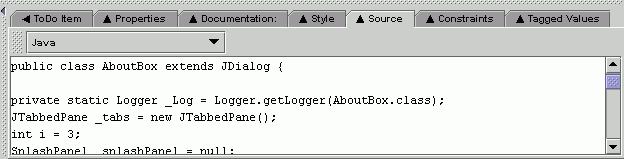

Argo's Source Tab allows you to preview the Java source code that will be generated for the selected design element.
If you are using JDK (not JRE) and have included colorize.jar in your CLASSPATH, you will see the Java source code with keywords, constants, and comments colored differently. This helps make the structure of the code more visable at a glance and makes the code easier to read quickly.
In future versions, ArgoUML will allow you to edit code directly in this tab pane and update the UML model as a result.